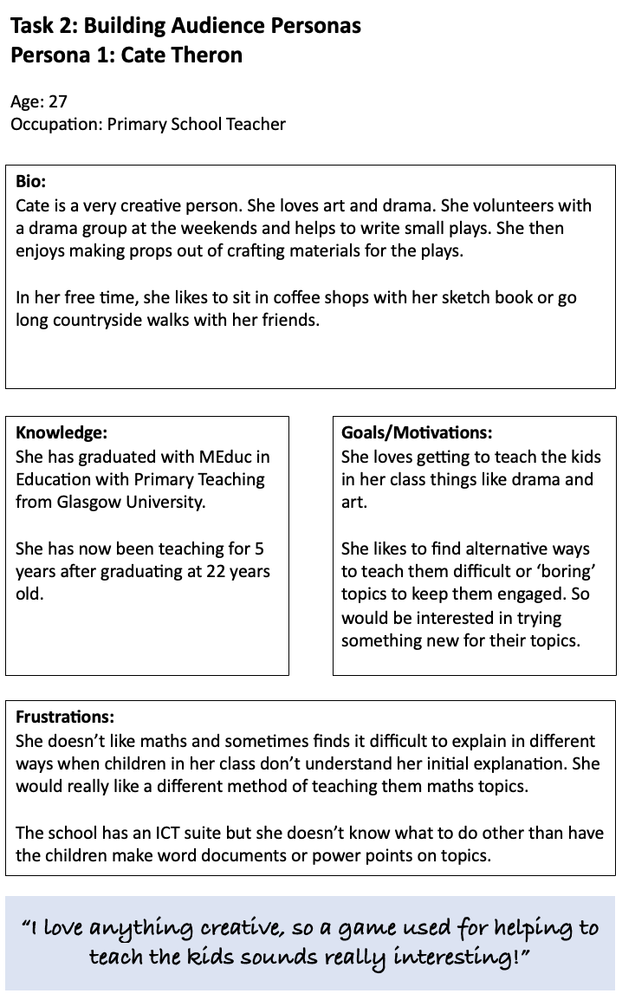
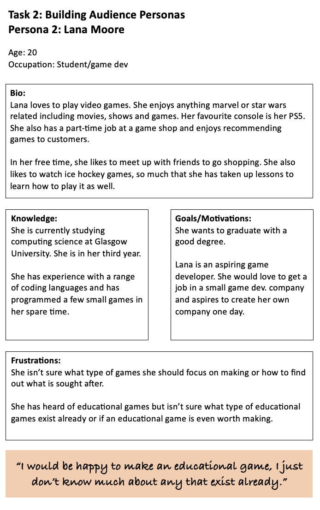

Identifying my Audience:
This topic would lend itself to teachers as it would give them an idea of how games can be used in education.
I think it would also potentially lend itself to game developers, to give them an idea of why developing educational games could be a good thing.
I would prefer to narrow down my audience. With teachers, I would like to limit the age so that I don’t need to address such a large age range on my website.
For game developers I would like to do the same in limiting the age range. I would choose to do this with a younger age group as these people would recently be out of education and might have a better idea in what kind of educational games would suit the current day better.
Some teachers could have pre-conceived ideas about using games in education. Whether they think it is useful or if they believe it isn’t possible to use games in an educational way.
Game developers might have seen or developed educational games before. Others might not think it is worth making an educational game.
I would potentially be able to distribute to a couple of the teachers in the target audience.
I know some computing science students (unsure whether they are interested in game development).
Audience 1: Teachers (of both primary and high school)
Age: 25 – 40 (retirement age of teachers usually around 60)
Gender: Mixed genders
Language Proficiency: Good language proficiency
Education level: Graduated with degree
Attitude towards writer or organisation: The audience might be sceptical in terms of not trusting a games ability to get information across to students.
Knowledge of topic: Some teachers might have some experience; others might not have much.
Audience action: I would hope that this audience would then use this information to pick out appropriate games for the age group/subject that they teach to use in their lessons.
Audience 2: Game developers (could be aspiring)
Age: 20 - 30
Gender: Mixed genders
Language Proficiency: Good language proficiency
Education level: In or graduated from further education – some experience in coding
Attitude towards writer or organisation: Some of the audience might be interested, others sceptical about creating a game for education purposes.
Knowledge of topic: Some knowledge in games, not as much knowledge in educational games.
Audience action:Developers or inspiring developers might begin to think about designing educational games.
Building Audience Personas:
Persona 1: Cate Theron
Persona 2: Lana Moore
Exploring Audience Needs in Relation to Design:
User Stories:
Cate Theron
As a primary school teacher,
I would like a resource to give me new ideas for when I’m teaching.
So that, I can trial this method with my class and see if it helps them in learning difficult or boring topics.
As a primary school teacher,
I would like a resource to show me whether a game is a good method to teach my class something.
So that, I know whether it will help them in their learning or just distract them.
Lana Moore
As an aspiring game developer,
I would like to know what educational games exist already.
So that, I have a better idea of what to make an educational game about.
As an aspiring game developer,
I would like to know if educational games are useful or not.
So that, I know whether there is worth in me making one.
User Needs:
Cate Theron
Cate, a primary teacher with a flair for creativity...
...needs to see examples of different educational games beside their topic in order to determine if any would be useful for her class.
...needs to easily sort through information on why educational games are useful in order to make sure it will be beneficial alongside her teaching.
...needs to easily find examples of educational games under certain topics in order to quickly find ones suited to the topic she is teaching.
...needs to see further information beside each game in order to find out what skills each game helps to improve.
Website 1 - Yale Art
Website 2 - Smashing Machine
Effectively addresses a topic (remember the first principles of design thinking):
Website 1, the Yale School of Art addresses it’s topic well and gives a description on the home page about what the school is and explains how their website is designed.
Website 2, the Smashing Magazine site doesn’t have a description on the home page to help me understand what the site is for.
Offers opportunities for social change, new learning and/or experiences:
On the front of the home page of website 1 there is information about a climate engagement mural unveiling which is open to the public, this offers opportunity for social change in terms of getting involved in an event regarding climate change.
They also have a calendar feature that gives the details for other events they are hosting. This includes things such as an event to help people become informed creators/consumers of AI-generated images and other learning opportunities.
Website 2 offers selections to explore different sections such as accessible components, css generators and front-end boilerplates. These all offer opportunity for new learning.
Analysis of the website in terms of:
The Audience
I think website 1 is primarily aimed towards people in/or interested in art school.
It contains links such as 'Apply to the School'.
It offers interaction and experience for the students of the school as they are allowed to log in and make changes to the site.
I am not sure who the main audience for website 2 is. I would assume it is aimed towards people in higher education (uni/college) and above that have some computing knowledge.
For the audience I have defined, I would say it is reasonably appropriate in terms of content. The mascot seems quite childish though, making it look more like a website for children.
Affordances, conceptual models and signifiers
The purpose of website 1 is to advertise the school and their events.
This project is very difficult to navigate given the confusing layout.
The information/graphics are not laid out in a consistent way.
It has a navigation bar at the left side of the home page which remains in the same position on the different pages of the site.
There is a calendar function on website 1 on the home page that shows the school’s upcoming events. When an event is clicked it gives a drop down of more information about the event.
The purpose of website 2 is to provide different articles sorted by topic.
It is quite easy to use, as there is a bar of topics at the top of the page allowing users to quickly find articles on a certain topic.
There is no trail to show you where you have been on the site.
A lot of options for where to go next are contained at the top of each page.
The site contains images of the authors of each article. These move when you hover over them, making the site less static.
On website 2, there is a separate scrolling bar at the bottom of the home page to allow you to view different options available.
Contrast, Repetition, Alignment, Proximity
I don't think website 1 makes an effective use of colour or graphics. There is no consistency in the colour or layout.
It doesn’t have a set colour scheme. Most of the text boxes and options are in different colours.
A lot of the text boxes are different sizes and in random places on the page, giving it a very unstructured look.
The background of the site does not help to enhance it as it contains text which makes the pages hard to look at.
Website 2 has a nice colour scheme of mainly red and white.
The layout of the home page is nicely organised. There are different things to select on the page, and these are all grouped neatly, with no overlapping in different colours to make the different options easy to identify.
They use graphics such as a magnifying glass in the search bar, making it easy to identify. They also have a logo at the far left of the navigation bar that takes you back to the home page when clicked.
The site uses symmetry as most articles are laid out in the same pattern.
Content Design
The website works on an original problem relevant to the audience as it focuses on information and events about the school.
I believe the content is correct as things like events are accompanied with dates, times and locations.
The range and depth of content on the site does give appropriate coverage of the topic for the audience as there are a wide range of topics covered.
The content is also relevant to the subject matter as each article on the site applies to a computing topic.
The site also provides links to other books, allowing users access to a wider range of knowledge.